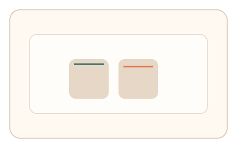
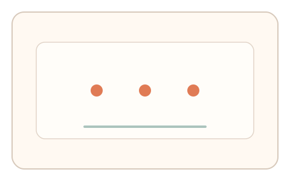
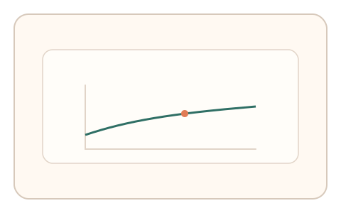

#158
Reverse Brainstorming - Round 2
已扩展
帧级瞬态挑战
帧级微变形/噪声呈现元素，要求短序列响应并评估反应时与路径一致性。
概念原文
任务元素以帧级微变形/噪声方式呈现，要求用户完成短序列响应，判定使用反应时与路径一致性。
自动化脚本难以稳健读取瞬态渲染细节，降低 UI 绕过概率。
研究背景
瞬态渲染细节对自动化读取不友好，真实用户在快速响应中会表现出稳定的反应时分布与路径特征。
核心机制
- 在帧级引入微变形或噪声。
- 要求用户快速完成短序列响应。
- 记录反应时与路径轨迹。
- 检查跨帧一致性与分布。
用户流程
- 步骤 1：用户看到瞬态变化元素。
- 步骤 2：快速响应并完成序列。
- 步骤 3：系统分析反应时与路径。
判定信号
反应时分布
真实反应存在稳定时间窗。
路径微波动
短序列中轨迹仍具生理特征。
判定逻辑
反应时与路径需符合基线；过快或过度平滑判异常。
对抗面
- 脚本直接读取渲染帧并点击
- 预计算帧序列回放
防御与缓解
- 随机化微变形相位
- 加入时间窗限制
- 结合输入抖动信号
可达性与风险
提供更慢版本或替代任务。
- 帧率差异影响一致性
- 视觉敏感用户不适
可视化状态

状态 1：帧级变化
元素在帧间微变形。

状态 2：快速响应
短序列响应与点击。

状态 3：一致性分析
分析反应时与路径一致性。
参考资料
Reaction time
说明反应时与时间窗。
Frame rate
说明帧级变化与显示特性。